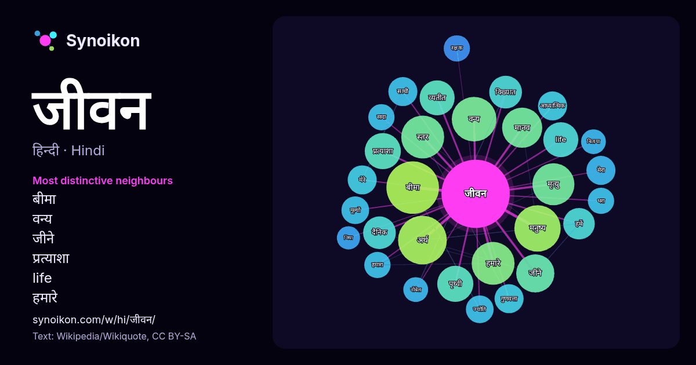

हिन्दी · लोकप्रिय शब्द
जीवन
“life” · विकिपीडिया, Wikiquote के 1316 प्रयोगों में इसके आसपास मिले शब्द।

सबसे विशिष्ट पड़ोसी
- बीमा 27×
- वन्य 24×
- जीने 18×
- प्रत्याशा 17×
- life 16×
- हमारे 15×
- व्यतीत 14×
- मनुष्य 14×
- दैनिक 11×
- विख्यात 11×
- ज्योति 9.9×
- सादा 9.6×
- मेरा 9.6×
- अर्थ 9.2×
- रक्षक 9.0×
- हमें 8.9×
- मूल्यों 8.9×
- आध्यात्मिक 8.8×
- पृथ्वी 8.7×
- साथी 8.7×
× = सामान्य विकिपीडिया टेक्स्ट की तुलना में कितने गुना अधिक।
सबसे अधिक आने वाले पड़ोसी
- बीमा 36
- अर्थ 31
- उन्होंने 30
- मनुष्य 28
- वन्य 26
- स्तर 24
- हमारे 24
- मृत्यु 23
- व्यक्ति 22
- मानव 21
- भारतीय 20
- जीने 19
- समय 18
- पृथ्वी 17
- प्रत्याशा 17
- life 16
- भर 16
- व्यतीत 16
- आधार 15
- जी 15
संदर्भ में
- परिभाषित किया जाता है। जीवन के विभिन्न रूप उपस्थित हैं, जैसे पादप, प्राणी, कवक, प्रजीव, प्राच्य और जीवाणु। जीव विज्ञान वह विज्ञान है जो जीवन का अध्ययन करता है। Wikipedia snippets · जीवन
- सुरक्षा, जैसे कारक शामिल हैं। जीवन स्तर जीवन की गुणवत्ता से बारीकी से संबंधित हैं। २०१३ में, मानव विकास सूचकांक ने जीवन की गुणवत्ता के लिए निम्न रूप से Wikipedia snippets · जीवन स्तर
- परग्रही जीवन या पार्थिवेतर जीवन (Extraterrestrial life या alien life) वह सम्भावित जीवन है जो पृथ्वी से अलग किसी अन्य पिण्ड पर विद्यमान हो और जिसकी उत्पत्ति Wikipedia snippets · परग्रही जीवन
- होता है। जीवन बीमा में पॉलिसी का भुगतान निश्चित है तथा बीमित घटना का घटित होना भी निशित है किन्तु इसके घटित होने का समय निश्चित नहीं है। इसलिए जीवन बीमा को Wikipedia snippets · जीवन बीमा
- जीवन विज्ञान (life sciences) की वर्तमान समय में अनेकानेक शाखायें हो गयीं हैं। जीवन विज्ञान में जीवधारियों का वैज्ञानिक अध्ययन किया जाता है। इसमें सूक्ष्मजीव Wikipedia snippets · जीवन विज्ञानों की सूची
- भारतीय जीवन बीमा निगम या एलआईसी, भारत की सबसे बड़ी सरकारी जीवन बीमा कंपनी है और देश की सबसे बड़ी निवेशक कंपनी भी है। यह पूरी तरह से भारत सरकार के स्वामित्व Wikipedia snippets · भारतीय जीवन बीमा निगम
- जीवन नैया 1936 में बनी हिन्दी भाषा की फिल्म है। देविका रानी - लता अशोक कुमार - रंजीत कुसुम कुमारी त्रिपाठी एस जीवन नैया इंटरनेट मूवी डेटाबेस पर Wikipedia snippets · जीवन नैया
- जीवन नगर दिल्ली का एक आवासीय क्षेत्र है। Wikipedia snippets · जीवन नगर
और शब्द
- इतिहास
- ईश्वर
- कार्य
- कुत्ता
- गर्मी
- गाना
- घंटी
- घड़ी
- घोड़ा
- चाय
- चित्रकला
- छाया
- जंगल
- जलवायु
- तूफ़ान
- दर्पण
- द्वीप
- नक्षत्र
- नमक
- परिवार
- पहाड़
- पानी
- पैसा
- प्रकृति
- बगीचा
- बिल्ली
- भाषा
- भोजन
- माता
- मानचित्र
- मृत्यु
- मौन
- रेगिस्तान
- रेलगाड़ी
- रोटी
- वर्षा
- विज्ञान
- शक्ति
- शरद
- शहद
- शहर
- सड़क
- सत्य
- समय
- सर्दी
- सेतु
- स्वर्ण
- स्वास्थ्य
- हृदय
2026-10-09 को डिफ़ॉल्ट सेटिंग्स (±5 शब्द, मध्यम कॉर्पस) के साथ पहले से गणना की गई। इंटरैक्टिव मानचित्र इसे लाइव डेटा से ताज़ा कर सकता है।
मशीन-अनूदित इंटरफ़ेस; सुधारों का स्वागत है।